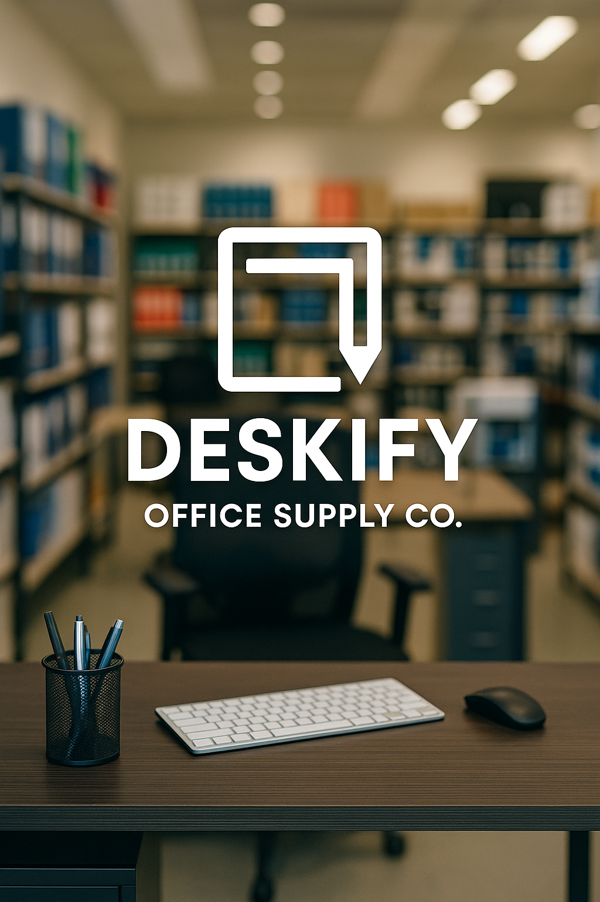
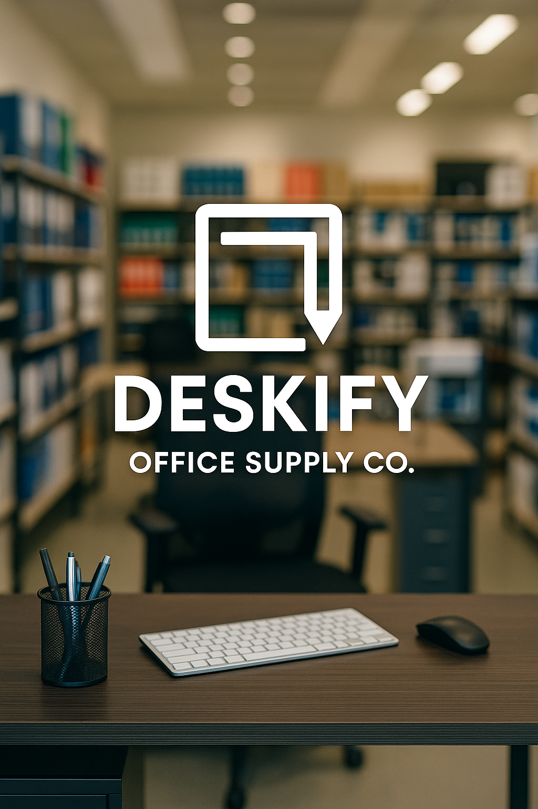
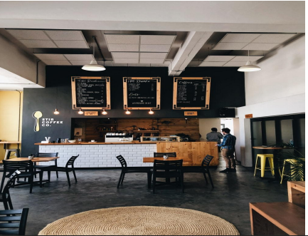

Developed a dynamic Power BI dashboard using M & DAX to transform sales data into actionable insights, addressing key business challenges and driving data-informed decisions for a high-end fashion retailer. The dashboard provided critical KPIs, sales trends, customer behavior analysis, and payment method breakdowns.

 Implemented a Power BI solution leveraging folder connections to automate sales data consolidation from disparate spreadsheets. This eliminated manual effort, improved data accuracy, and delivered real-time, actionable insights on regional, brand, and retailer performance."

Implemented a Power BI solution leveraging folder connections to automate sales data consolidation from disparate spreadsheets. This eliminated manual effort, improved data accuracy, and delivered real-time, actionable insights on regional, brand, and retailer performance."

Developed a comprehensive Power BI dashboard to replace manual Excel reporting for Deskify Office Supply Co., centralizing data and streamlining analysis. This solution provided crucial insights into product and customer profitability, sales trends, and operational efficiency, empowering data-driven decisions.

Leveraged advanced Microsoft excel to transform Cafe Harmony's sales data into actionable business intelligence, identifying key revenue drivers, customer behavior patterns, and operational inefficiencies to develop targeted strategies for sustainable growth and increased profitability
 Developed an interactive Power BI dashboard, leveraging DAX, to analyze global suicide data and identify key demographic and economic drivers. This solution provides ClarityCare with actionable insights to inform targeted prevention strategies and reduce suicide rates.
Developed an interactive Power BI dashboard, leveraging DAX, to analyze global suicide data and identify key demographic and economic drivers. This solution provides ClarityCare with actionable insights to inform targeted prevention strategies and reduce suicide rates.
 Unified fragmented sales, customer, and product data from multiple sources into an interactive Power BI dashboard. This solution provided critical insights into customer behavior, product profitability, and sales trends, enabling data-driven strategic decision-making.
Unified fragmented sales, customer, and product data from multiple sources into an interactive Power BI dashboard. This solution provided critical insights into customer behavior, product profitability, and sales trends, enabling data-driven strategic decision-making.
 Developed a Power BI dashboard with Row-Level Security (RLS) in Power BI Service to analyze global sales across diverse product lines. This solution enabled secure, centralized performance tracking and streamlined reporting for strategic decision-making.
Developed a Power BI dashboard with Row-Level Security (RLS) in Power BI Service to analyze global sales across diverse product lines. This solution enabled secure, centralized performance tracking and streamlined reporting for strategic decision-making.
 Developed a Power BI dashboard leveraging web scraping to extract and analyze global historical and forecasted population data. This provided crucial insights into demographic trends, aiding strategic planning for governments and organizations.
Developed a Power BI dashboard leveraging web scraping to extract and analyze global historical and forecasted population data. This provided crucial insights into demographic trends, aiding strategic planning for governments and organizations.